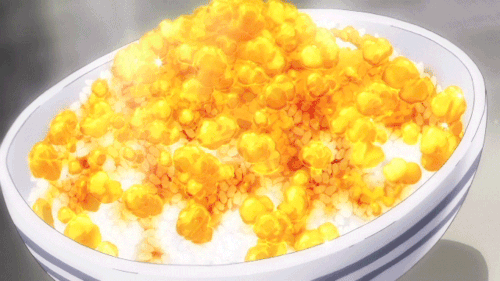

Transforming Furikake Rice

Now this one is a special because it is the 8th dish on the restaurant Yukihira's secret menu.
One of the most flashy dishes in the Food Wars anime has to be the transforming furikake rice dish. It is the first dish cooked by Soma Yukihira for Erin Nakiri
The dish transforms as a result of the jello cubes of meat melting and changing the form of the egg.
For this dish in particular you will need to get several ingredients, most of which you can find at your local grocery store.
But, there will be some less popular ingredients that you will need to procure elsewhere.
We have managed to find them at an Asian grocery market. So, try your luck there first.
Also one last tip before we begin, When you are cooking we recommend using sesame oil in particular as it gives off an amazing nutty flavor and scent that just merges perfectly with the ginger and garlic.
Now let's get the show on the road!
Ingredients:
Total preparation Time - 35 minutes
Total Calories Per Serving – 231 kcal
The ingredients for this delicious meal are:
- 2 tbsp. sesame oil
- 8 Unbreaded chicken wings, uncooked
- 2 tsp. bonito soup stock
- 5 cups of water
- 2 teaspoon of minced ginger
- 1 tbsp. sugar
- 3 tbsp. of soy sauce
- 1/4 cup sake
- 2 tbsp. gelatin
- 1 cup white rice
- 2 green onions
- 4 eggs
- Salt and pepper to taste
The Preparation:
Now is the real fun, if it might seem difficult, trust me, the end result is defnitely worth it!
- Add sesame oil to a pan and heat to medium. Fry the chicken wings for 10-15 minutes, or until golden brown. Save the chicken residue in the pan.
- Add water and soup stock to a pot and heat to a boil. Add the chicken and turn the broth down to medium low.
- Add the ginger, soy sauce, sake, and sugar to the chicken pan. Stir all of these ingredients with a wooden spoon.
- Pour everything from the pan into the Broth. Simmer on medium-low for 20 minutes.
- Take the broth off the heat and let it sit for a few minutes. If there is a layer of fat on the top, take it off. Take the chicken wings out and set aside.
- Add the gelatine to 1/2 of water and let bloom for 5 minutes. Mix the gelatine into the water until fully dissolved. Add the gelatine mix to the broth mix.
- Grease a tray with butter. Add the broth. Cover with cling wrap, put in the fridge and and let solidify for 2 hours.
- Separate the chicken from the bone and skin. Add the chicken to the rice, unless you want the recipe to be exactly like in Food Wars.
- Take the gelatin broth out of the fridge and Cut small cubes of broth gelatin.
- Scramble eggs. Add eggs and chopped green onions to rice. Add the aspic (meat broth jelly). Watch the cubes melt and enjoy.
And there you have it, your own Transforming Furikake Rice ! Enjoy making it and sharing it with the people you love, and have a good day!